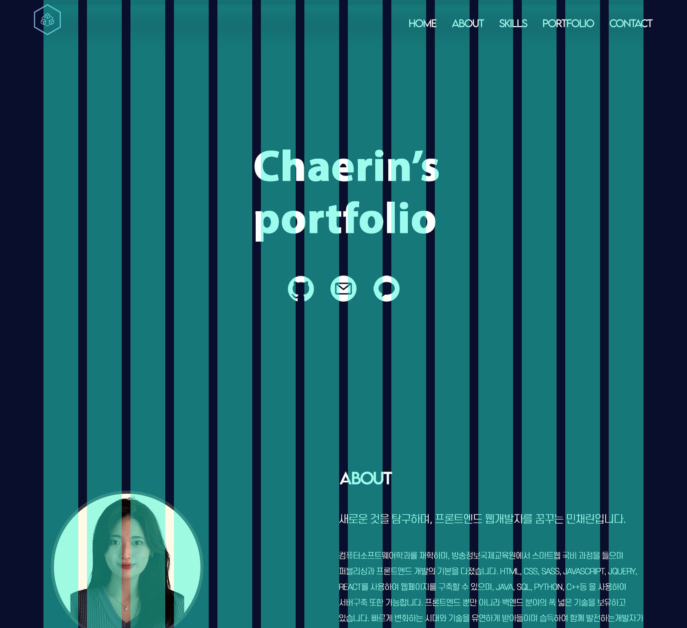

메인페이지는 사용자가 다양한 SNS에 쉽게 접근할 수 있도록 버튼을 배치하였습니다.
또한 포트폴리오를 각 분야별로 묶어 슬라이드 형식으로 볼 수 있도록 하였습니다.
01
프로필 디자인 프로세스

GRID SYSTEM
Full Width : 1580px
Grid Width : 1380px
Column Width : 80px
Gutter Width : 20px
Number of Column : 14
COLOR SYSTEM
기본 배경색상인 진한 남색과 대비되는 밝은 회색을 사용하여 대비감을 주어 사용자들의 눈에 띄게하였습니다.
로고는 배경색인 남색과 포인트 컬러인 밝은 회색이 잘 어울어지도록 회색빛이 도는 하늘색을 사용하였습니다.